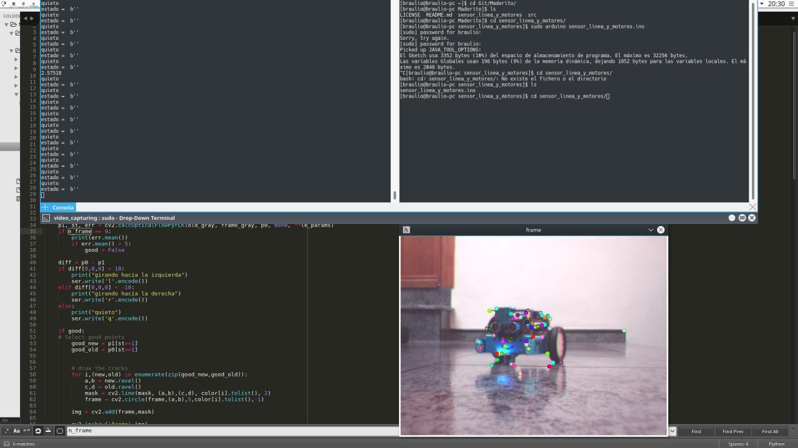
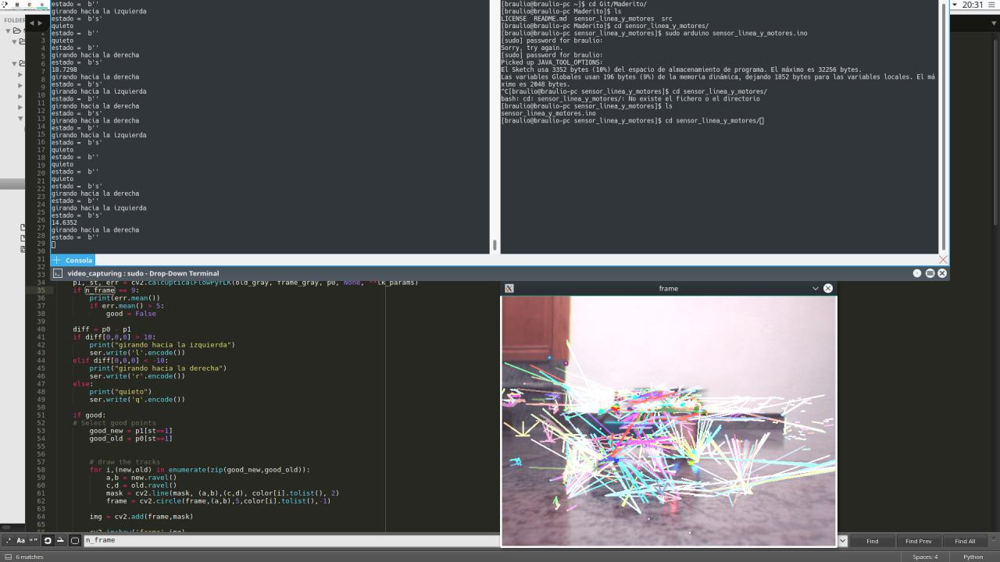

Maderito
El robot de sumo inteligente
Sobre nosotros

- Marta Gómez mgmacias95 Mrs_DarkDonado
- Paula de la Hoz terceranexus6 terceranexus6
- Braulio Vargas BraulioV brau_vl
Índice
- El chasis de Maderito.
- Componentes usados en el proyecto.
- Código Arduino.
- Código OpenCV.
- Comunicación Arduino-Raspberry Pi.
- Problemas que hemos tenido.
El chasis de Maderito


La rampa


Componentes usados
- Dos controladores de motor L294N.
- Cuatro motores DC.
- Cuatro sensores CNY70
- Un sensor ultrasonidos HC-SR04
- Una cámara Eye Toy de PS2.
- Una placa Arduino Uno.
- Una placa Raspberry Pi 1 Model B.
Componentes usados


Componentes usados


Componentes usados

Código Arduino
¿Cómo ve Maderito?
Primero por que tiene una cámara
OpenCV
Es el pilar central de la visión en cuanto a software se refiere.
¿Cómo detecta el movimiento?
OpticalFlow
El Optical Flow es el movimiento relativo a nuestra posición de uno o varios objetos.

¿Se puede hacer eficientemente?
Sí
Pero tiene sus riesgos
Lo que ve Maderito


def detect_object(cam):
# Take first frame and find corners in it
cam.release()
cap = cv2.VideoCapture(camera)
ret, old_frame = cap.read()
old_gray = cv2.cvtColor(old_frame, cv2.COLOR_BGR2GRAY)
p0 = cv2.goodFeaturesToTrack(old_gray, mask = None, **feature_params)
mask = np.zeros_like(old_frame)
return p0, old_gray, mask, cap
def track_object(p0, old_gray, mask, n_frame):
ret,frame = cap.read()
frame_gray = cv2.cvtColor(frame, cv2.COLOR_BGR2GRAY)
good, move, direccion = True, False, 'q'
# calculate optical flow
p1, st, err = cv2.calcOpticalFlowPyrLK(old_gray, frame_gray, p0, None, **lk_params)
if n_frame == 9:
if err.mean() > 3.5:
good = False
if len(p1[st==1]) == 0 or len(p0[st==1]) == 0:
good = False
if good:
# Select good points
good_new = p1[st==1]
good_old = p0[st==1]
diff = good_new - good_old
norm = np.sum(diff)
if diff[0,0] > 10:
# print("girando hacia la DERECHA")
direccion = 'r'
move = True
elif diff[0,0] < -10:
# print("girando hacia la IZQUIERDA")
direccion = 'l'
move = True
else:
direccion = 'q'
# print("QUIETO")
move = False
old_gray = frame_gray.copy()
p0 = good_new.reshape(-1,1,2)
return good, move, direccion